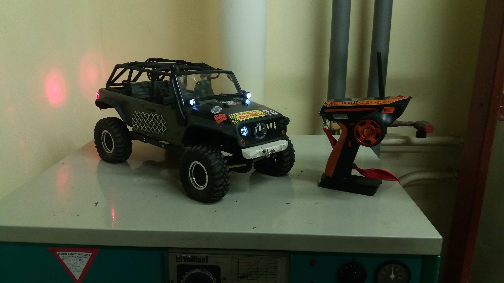
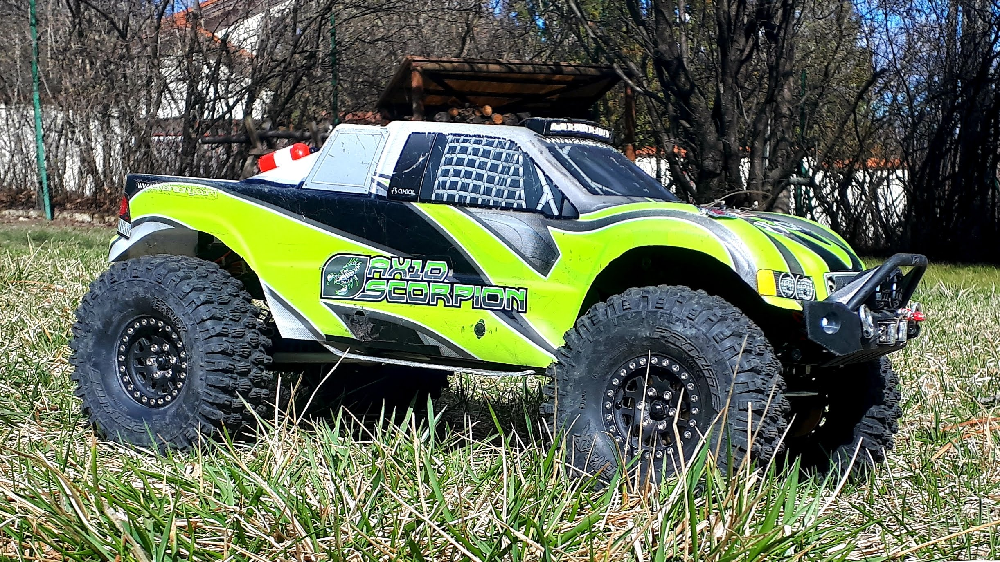
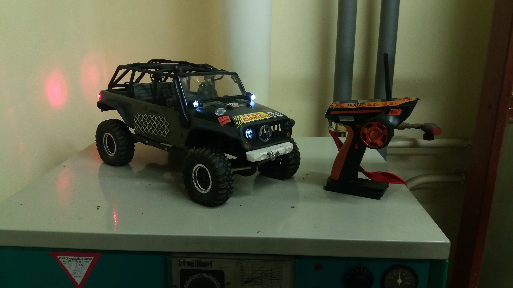
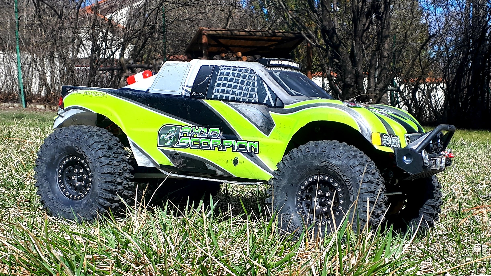

Apával kettesben játszottunk kb. 10 éven át, 3 éve azonban apa eladta a saját autóját és vett egy újabb modellt. Ezt a lendületet megragadva beléptem több témával foglalkozó Facebook csoportba, megismerkedtünk emberekkel és elhatároztuk, hogy kipróbáljuk magunkat versenyeken is. Ez számomra rengeteg építést jelentett, de ez teljesen kifizetődő volt.
Mikor adódott rá lehetőség, videók is készültek a futamokról, melyek az alábbi linken érhetők el:
első futam
második futam
ötödik futam